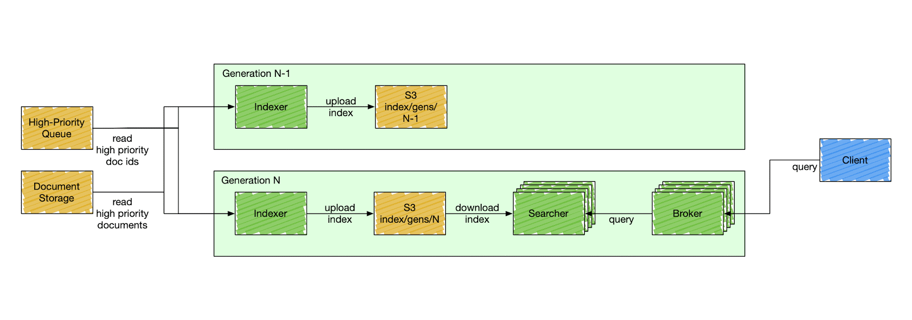
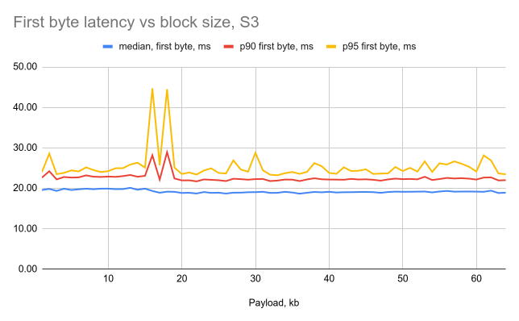
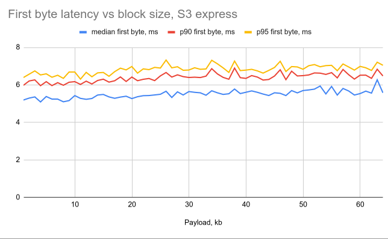

🔎
Main point: decouple search and storage

[1]: https://www.uber.com/en-NL/blog/lucene-version-upgrade/ [2]: https://careers.doordash.com/blog/introducing-doordashs-in-house-search-engine/ [3]: https://www.youtube.com/watch?v=EkkzSLstSAE
open-source?
IO abstraction for data access:
public abstract class Directory implements Closeable {
public abstract String[] listAll();
public abstract void deleteFile(String name);
public abstract long fileLength(String name);
public abstract void rename(String source, String dest);
public abstract IndexOutput createOutput(String name, IOContext context);
public abstract IndexInput openInput(String name, IOContext context);
public abstract void close();
}
S3 Express: low-latency single-AZ S3
|  |  |